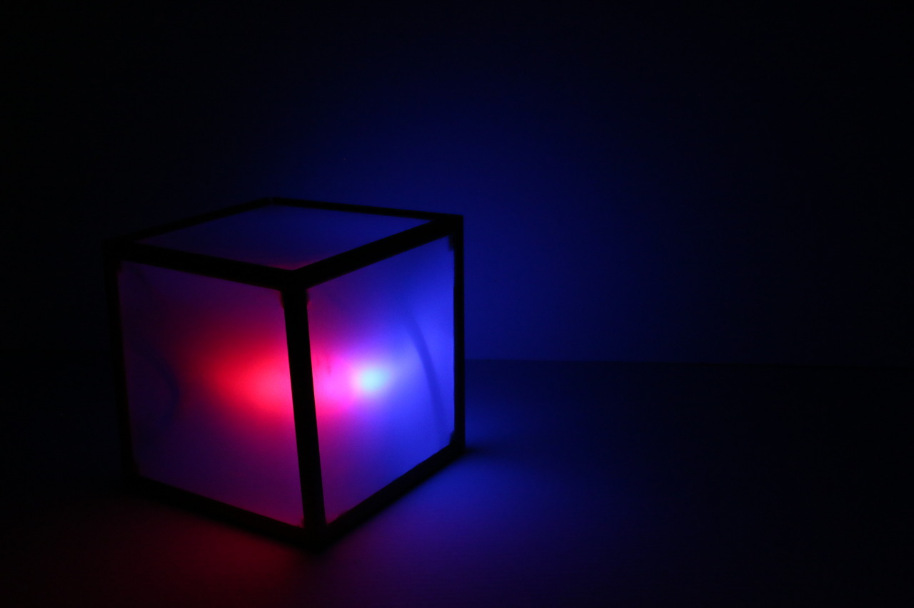
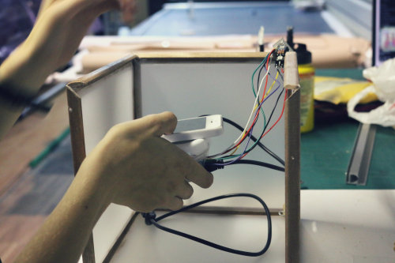
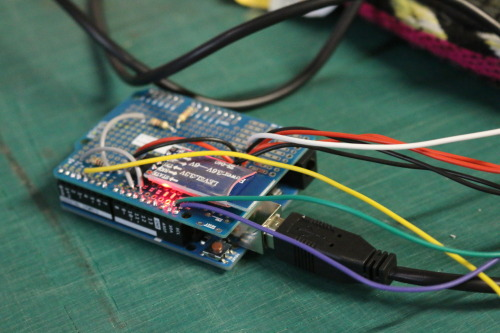
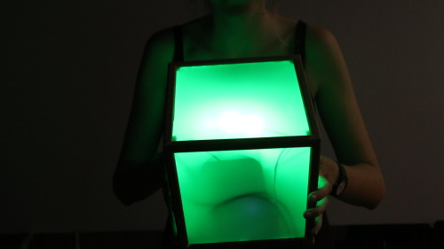

KIKUBES
Design and prototype of a collaborative and interactive music installation
Keywords: interactive installation, playfulness
  Kikubes is an interactive installation for creating collaborative music performances. It’s a final degree project designed and prototyped by Clara Borràs and I. A Kikube is a square box which allows a user to place his/her smartphone inside and become a participant in a collective music game. Interaction is two dimensional; x and y rotations modify music pattern and volume, respectively. Players interact between each other by making their Kikubes face one another and receiving lighting feedback.
 The installation aims to encourage social interaction between individuals from different communities or age groups, steering user’s attention away from their smartphone screens, towards the physical world. The technologies used are open source, including the visual programming language, PureData, a coding environment and JavaScript framework for Android called Protocoder, and the Arduino microcontroller and software. The Kikube is the culmination of an iterative design and prototyping process, developed from a user-centered point of view. The results are to serve as a first approach for complete technical implementation. interactive · collaborative · musical To play with Kikubes, each participant chooses a box, installs the app on his/her smartphone and places it inside the cube. The app connects via Bluetooth to the box and activates it. It is also connected to a server via WiFi. Each Kikube corresponds to a different instrument. The user can move and rotate the cube to change the instrument’s pattern, choosing between four defined patterns. The user can also manipulate the volume, in order to silence the instrument or make it heard. For the prototype, the Kikubes sound comes from a computer, rather than ideally from each cube. If users face their cubes together using color sensors, the two corresponding instruments play a “solo” or a new track as long as their faces are touching. In the following video the three Kikubes that were part of the final prototype are tested: The final design includes new states and behaviors the Kikubes can have, depending on other Kikubes and depending on the user’s interaction. The Kikube starts blinking after a certain amount of time and users have to connect them together to make it stop blinking, or their instrument will start making funny, distorted or off-key sounds. The following video is Clara’s teaser video for the final design, including these behaviors and how users interact with the installation. The video uses cardboard mock-ups and shows possible social contexts. Articles about Kikubes (Catalan): Pompeu Fabra University | Barcelona Lab